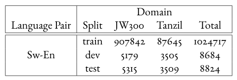
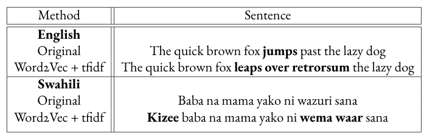
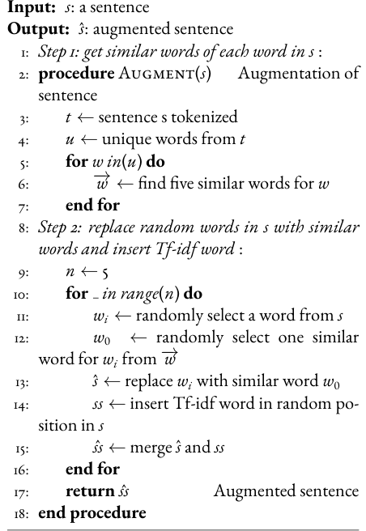
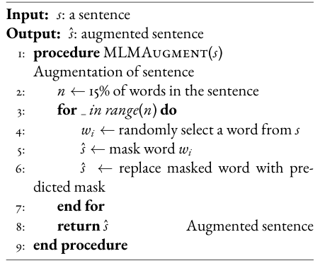
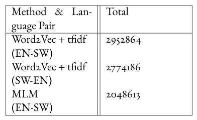
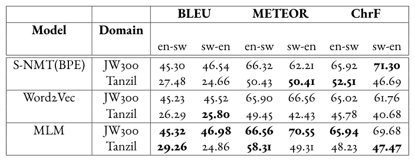

RAIL 2022Tafsiri ya mashine
Mbinu za Uongezaji wa Maandishi Zinazotumika kwa Tafsiri ya Mashine ya Rasilimali Chache: Kisa cha Kiswahili
Tafsiri ya mashine, haijakaguliwa na binadamu. Makala asili ndiyo toleo la rejeo; sentensi zilizopigiwa mstari ni zile ambazo ukaguzi wa kiotomatiki haukuwa na uhakika nazo.
Proceedings of the 3rd Workshop on Resources for African Indigenous Languages (RAIL 2022), Journal of the Digital Humanities Association of Southern Africa.
Tafsiri ya Ernst van Gassen (Arktos AI Lab), yenye leseni CC BY-SA 4.0 kama makala asili. Matumizi tena yanaruhusiwa kwa kutaja mwandishi; shiriki marekebisho kwa masharti yale yale. Waandishi asili hawajakagua wala kuidhinisha tafsiri hii.
Maandishi matupu ya kutumia tena, pamoja na leseni yake: Kiswahili · LESENI
Taasisi
Gitau, Catherine
African Institute for Mathematical Sciences Ghana
Marivate, Vukosi
Department of Computer Science, University of Pretoria, South Africa
Anwani za barua pepe zimeondolewa kwa sababu za faragha. Zinapatikana katika PDF asilia.
Muhtasari
Katika kazi hii tunachunguza athari za kutumia kazi za ujalizaji data wa kimaandishi kwa tafsiri ya mashine ya rasilimali chache. Kumekuwa na hamu ya hivi karibuni katika kuchunguza mbinu za kufunza mifumo kwa lugha zenye rasilimali chache na mbinu moja maarufu ni matumizi ya mbinu za ujalizaji data. Ujalizaji data unalenga kuongeza wingi wa data inayopatikana kufunza mfumo. Katika tafsiri ya mashine, jozi nyingi za lugha duniani zinachukuliwa kuwa za rasilimali chache kwa sababu zina data sambamba kidogo inayopatikana na ubora wa mifumo ya tafsiri ya mashine ya neva (NMT) unategemea sana upatikanaji wa korasi sambamba za kutosha. Tunasoma na kutumia mbinu tatu rahisi za ujalizaji data zinazotumika sana katika kazi za uainishaji wa maandishi; ubadilishaji wa visawe, uingizaji nasibu na ujalizaji data wa kimuktadha na kulinganisha utendaji wake na tafsiri ya mashine ya neva ya msingi kwa seti za data za Kiingereza-Kiswahili (EnSw). Pia tunawasilisha matokeo katika alama za BLEU, ChrF na Meteor. Kwa ujumla, mbinu ya ujalizaji data wa kimuktadha inaonyesha maboresho fulani katika mielekeo yote ya EN → SW na SW → EN. Tunaona kwamba kuna uwezekano wa kutumia mbinu hizi katika tafsiri ya mashine ya neva wakati majaribio mapana zaidi yanapofanywa kwa seti mbalimbali za data.
Maneno Muhimu
rasilimali chache, Ujalizaji data, tafsiri ya mashine
1 Utangulizi
Kumekuwa na maendeleo kadhaa katika tafsiri ya mashine na mifumo ya kisasa ya MT ambayo inaweza kufikia utendaji wa tafsiri karibu na kiwango cha binadamu kwenye jozi za lugha ambazo zina rasilimali kubwa sana za mafunzo sambamba. Kwa bahati mbaya, mifumo ya tafsiri ya mashine ya neva hufanya vibaya sana kwenye jozi za lugha yenye rasilimali chache ambapo data sambamba ya mafunzo ni adimu. Kuboresha utendaji wa tafsiri kwenye jozi za lugha yenye rasilimali chache kunaweza kuwa na athari kubwa ikizingatiwa kwamba lugha hizi zinazungumzwa na sehemu kubwa ya idadi ya watu duniani.
Kulingana na Lisanza (2021), ni takriban watu milioni 5-10 pekee wanaozungumza Kiswahili kama lugha yao ya asili, lakini inazungumzwa kama lugha ya pili na takriban watu milioni 80 katika lingua franca ya Kusini-mashariki mwa Afrika, na kuifanya kuwa lugha inayozungumzwa zaidi katika Afrika Kusini mwa Jangwa la Sahara.
Licha ya ukweli kwamba lugha hiyo inazungumzwa na mamilioni katika bara la Afrika, inachangia chini ya 0.1% ya mtandao ambapo 58.4% ya maudhui ya mtandao ni kwa Kiingereza kulingana na W3Techs (2020), na kuifanya kuwa lugha yenye rasilimali chache. Ingawa Kiswahili kinazungumzwa na watu wengi hivyo, kuna kazi ndogo pana ambayo imefanywa kuboresha mifano ya tafsiri iliyojengwa kwa lugha hiyo. Data inayohitajika kuzalisha mifumo ya tafsiri ya mashine ya neva ya ubora wa juu haipatikani na hivyo kusababisha ubora duni wa tafsiri.
Katika maono ya kompyuta, mbinu za Ujalizaji data hutumiwa sana ili kuongeza Uthabiti na kuboresha ujifunzaji wa vitu kwa mifano michache sana ya mafunzo. Katika uchakataji wa picha, data iliyofunzwa hujazwa kwa, kwa mfano, kugeuza picha kwa mlalo, kupunguza kwa nasibu, kuinamisha n.k. Ujalizaji data sasa umekuwa mbinu sanifu ya kufunza mitandao ya neva ya kina kwa ajili ya uchakataji wa picha na si jambo la kawaida sana katika kufunza mitandao kwa kazi za uchakataji wa lugha asilia (NLP) kama vile tafsiri ya mashine. Kutumia mbinu za Ujalizaji data katika maandishi si rahisi kama katika maono ya kompyuta kwa sababu katika maono ya kompyuta, lebo na maudhui ya picha asili huhifadhiwa ilhali kwa kazi za uchakataji wa lugha asilia (NLP), kuna haja ya kuhifadhi muktadha wa sentensi baada ya ujalizaji. Hata hivyo kuna mbinu kadhaa za Ujalizaji data ambazo zimethibitishwa kuboresha utendaji kwenye kazi mbalimbali za NLP kama vile uainishaji wa maandishi lakini si jambo la kawaida kutumia mbinu hizi za Ujalizaji data kwa kazi kama vile tafsiri ya mashine.
Tafsiri ya mashine ya neva (NMT) kama ilivyowasilishwa katika kazi ya Sutskever et al. (2014);Cho et al. (2014) ni kazi ya mfuatano hadi mfuatano inayotumia mtandao wa neva wa kujirudia wenye mwelekeo mbili unaojulikana kama kisimbuzi kuchakata sentensi chanzi kuwa vekta zinazoitwa kisimbuaji ambacho kisha hutabiri maneno katika lugha lengwa. Ili kuweza kufunza mfano unaoweza kutoa tafsiri nzuri, mitandao hii inahitaji data sambamba nyingi au jozi za sentensi zenye maneno yanayotokea katika miktadha mbalimbali ambayo haipatikani katika jozi za lugha yenye rasilimali chache na hivyo kufanya utendaji wa mifano kuwa duni kabisa. Moja ya suluhisho la tatizo hili ni kufafanua kwa mikono data ya lugha moja inayopatikana jambo ambalo linachukua muda na ni ghali au kutekeleza mbinu za Ujalizaji data zisizosimamiwa.
Katika kazi hii tunachunguza baadhi ya mbinu za Ujalizaji data ambazo zinatumika sana kuboresha kazi za uainishaji wa maandishi na kuchunguza athari zake kwenye utendaji wa miundo ya tafsiri ya mashine ya neva ya rasilimali chache kwa Kiingereza-Kiswahili (EnSw). Mbinu maarufu zaidi za ujalizaji maandishi zinazotumika kwa kazi za uainishaji wa maandishi zinajumuisha operesheni nne zenye nguvu; ubadilishaji wa visawe, uingizaji nasibu, ubadilishanaji nasibu na ufutaji nasibu. Mbinu hizi zimeonyeshwa kuboresha utendaji katika kazi za uainishaji wa maandishi kama inavyoonyeshwa katika Wei & Zou (2019). Na ili kupima vyema athari za mbinu zetu za Ujalizaji data, tunalinganisha matokeo na muundo wa msingi uliofunzwa kwenye seti za data za En-Sw.
Kwa muhtasari, michango yetu inajumuisha:
- Tunachunguza na kutathmini kwenye kazi ya NMT, mbinu tatu za Ujalizaji data ambazo kwa sasa zinatumika tu katika kazi za uainishaji wa maandishi; ujalizaji unaotegemea Word2Vec ambao hufanya ubadilishaji wa visawe katika sentensi, ujalizaji unaotegemea TF-IDF ili kuingiza maneno katika nafasi nasibu katika sentensi pamoja na matumizi ya ujalizaji unaotegemea Masked Language Model ambao hufanya Ujalizaji data wa kimuktadha kwenye maandishi.
- Tunaonyesha jinsi mbinu hizi za Ujalizaji data zinavyoweza kutumika katika kazi za NMT.
- Pia tulipanua maktaba ya textaugment Marivate & Sefara (2020) kutumia mifano iliyofunzwa mapema ya Fasttext.
- Tunatoa matokeo ya msingi ya NMT katika alama za BLEU, Meteor na ChrF.
Karatasi hii imepangwa kama ifuatavyo; Tunaangalia kazi iliyofanywa na waandishi wa awali juu ya Ujalizaji data kwa lugha yenye rasilimali chache kwanza. Pia tunaangalia mbinu za Ujalizaji data na mikabala tuliyotumia katika utafiti wetu ambao umefafanuliwa katika Sehemu ya 3. Sehemu ya 4 inafafanua mipangilio ya modeli iliyozingatiwa kwa kila mkabala wa Ujalizaji data, Sehemu ya 5 inajadili matokeo ya majaribio na kisha tunahitimisha kwa kutaja vikwazo na kazi ya baadaye na pia kuhitimisha katika Sehemu za 6 na 7.
2 Mapitio ya Maandiko
Kazi ya tafsiri ya mashine ili kuboresha ubora wa tafsiri ya mashine kwenye lugha yenye rasilimali chache ni tatizo lililosomwa sana. Katika uchakataji wa lugha asilia (NLP), Ujalizaji data ni mbinu maarufu inayotumika kuongeza ukubwa wa data ya mafunzo.
Mkabala mmoja wenye matumaini ni matumizi ya Ujifunzaji hamishi Zoph et al. (2016). Mbinu hii ilithibitisha kwamba kuwa na maarifa ya awali katika tafsiri ya jozi ya lugha tofauti yenye rasilimali nyingi kunaweza kuboresha kutafsiri lugha yenye rasilimali chache. Mfano wa NMT kwanza hufunzwa kwenye korasi kubwa sambamba ili kuunda mfano mzazi na kuendelea kuufunza mfano huu kwa kuulisha korasi ndogo zaidi sambamba ya lugha yenye rasilimali chache na kusababisha mfano mtoto ambao hurithi maarifa kutoka kwa mfano mzazi kwa kutumia tena vigezo vyake. Jozi za lugha za mzazi na mtoto zilishiriki lugha lengwa sawa (Kiingereza). Matumizi ya data kutoka lugha nyingine yanaweza kuonekana kama kazi ya Ujalizaji data yenyewe na maboresho makubwa yameonekana hasa wakati lugha yenye rasilimali nyingi inafanana kisintaksia na lugha yenye rasilimali chache Lin et al. (2019).
Kazi ya Sennrich et al. (2016) inachunguza mbinu ya Ujalizaji data kwa tafsiri ya mashine inayojulikana kama tafsiri ya kurudi nyuma ambapo tafsiri ya mashine hutumiwa kutafsiri kiotomatiki data ya lugha moja ya lugha lengwa kuwa data ya lugha chanzo ili kuunda data sambamba sintetiki kwa mafunzo na kwa sasa ndiyo mbinu ya Ujalizaji data inayotumiwa zaidi katika kazi za tafsiri ya mashine. Ubora wa mfumo wa kurudi nyuma ingawa unafaa, umeonyeshwa kuathiri vibaya utendaji wa Mfano wa mwisho wa NMT wakati data ya lugha moja ya upande wa lugha lengwa ni chache. Tafsiri ya kurudi nyuma kama mbinu ya kufanya Ujalizaji data katika tafsiri ya mashine inaweza kuharibu utendaji wa tafsiri ya Lugha yenye rasilimali chache - Kiingereza (LRL - ENG) kutokana na ukubwa mdogo wa data ya mafunzo kama inavyoonyeshwa katika Xia et al. (2019).
Xia et al. (2019) wanaongeza data sambamba kupitia mbinu mbili: kutafsiri kurudi nyuma kutoka ENG hadi lugha yenye rasilimali chache (LRL) au lugha yenye rasilimali nyingi (HRL) na kubadilisha seti ya data ya HRL-ENG kuwa seti ya data bandia ya LRL-ENG. Wanatumia kamusi ya lugha mbili iliyochochewa kuingiza maneno ya LRL ndani ya HRL kisha kurekebisha zaidi sentensi hizi kwa kutumia mfumo wa tafsiri ya mashine usiosimamiwa uliorekebishwa. Mbinu yao ilithibitisha kuboresha ubora wa tafsiri ikilinganishwa na misingi ya tafsiri-nyuma iliyosimamiwa hata hivyo, mbinu hiyo inahitaji ufikiaji wa HRL inayohusiana na LRL pamoja na LRL ya lugha moja.
Kuna mbinu nyingine za Ujalizaji data ambazo zimetumika katika kazi nyingine za NLP kama vile uainishaji wa maandishi ili kuboresha utendaji. Wei & Zou (2019) wanaonyesha kwamba ubadilishaji rahisi wa neno kwa kutumia misingi ya maarifa kama WordNet Miller (1995) unaweza kuboresha utendaji wa kazi za uainishaji. Marivate & Sefara (2020) pia wanaona kwamba ujalizaji unaotegemea Word2Vec pia ni suluhisho linalowezekana wakati mtu hana ufikiaji wa msingi wa maarifa wa visawe kama vile WordNet Miller (1995). Kumar et al. (2020) wanaonyesha kwamba mifano iliyofunzwa awali ya seq2seq inaweza kutumika kwa ufanisi kwa Ujalizaji data na hizi hutoa utendaji bora zaidi. Mbinu hizi za Ujalizaji data kwa sasa zinatumika tu kuboresha kazi za uainishaji na bado hazijatumika katika kazi yoyote ya tafsiri ya mashine ya neva ili kuboresha utendaji. Katika kazi hii tutakuwa tunaangalia jinsi baadhi ya mbinu hizi zinaweza kutumika pia kuboresha mifano ya tafsiri ya mashine ya neva ambapo data ni ya rasilimali chache. Hasa, tutachunguza mbinu tatu za ujalizaji data ambazo ni pamoja na: 1) Ujalizaji unaotegemea Word2Vec, 2) Ujalizaji unaotegemea Tf-idf, 3) Ujalizaji unaotegemea Masked Language Model na kutumia data ya ziada kufunza modeli ya NMT.
3 Mbinu
Lengo letu ni kulinganisha mbinu tofauti za ujalizaji data zinazotumika katika kazi za uainishaji wa maandishi kwa lengo la kutambua kama mbinu hizo zinaweza kutumika kuboresha alama ya msingi ya NMT. Matokeo yanalinganishwa katika seti mbili tofauti za data na hutumia seti za majaribio za kikoa husika kuonyesha uwezo wa ujumlishaji wa modeli. Majaribio haya ni muhimu kusaidia watafiti wengine kupata maarifa wanapofanya kazi ya kujenga modeli bora za tafsiri ya mashine ya neva kwa lugha zenye rasilimali chache. Kwanza, tunaelezea data iliyotumika kufunza modeli, kisha mbinu za ujalizaji data ambazo tutakuwa tunatumia na hatimaye tunatoa maelezo ya majaribio tuliyofanya ili kujaribu mbinu hizi pamoja na matokeo yaliyopatikana.
3.1 Data ya Mafunzo
Kiasi kidogo cha data sambamba kinapatikana kwa Kiswahili-Kiingereza. Data ilipokelewa kutoka kwa kazi ya Lakew et al. (2020) ambapo walitoa data sanifu za majaribio na seti za majaribio kwa lugha tano tofauti (Kiswahili, Kiamhara, Kitigirinya, Kioromo na Kisomali). Walikusanya korasi zote sambamba zilizopo kwa lugha hizo tano kutoka kwa korasi ya Opus Tiedemann (2012) ambayo inajumuisha mkusanyiko wa maandishi yaliyotafsiriwa kutoka kwenye wavuti. Kwa kazi hii, tulitumia data inayojumuisha JW300 Agić & Vulić (2019) na Tanzil Tiedemann (2012) ambayo hutoa mkusanyiko wa tafsiri za Quran ili kulinganisha na matokeo ya msingi kutoka kwa kazi ya Lakew et al. (2020).
Jedwali la 1 linaonyesha kiasi cha data sambamba kilichokusanywa. Data iligawanywa katika seti za mafunzo, maendeleo na majaribio kama ilivyo katika Lakew et al. (2020). Kisha tuligawa data katika vipashio vya nusu-neno kwa kutumia Usimbaji wa Jozi za Baiti Sennrich et al. (2016) ambapo tulijifunza tokeni 20K za usimbaji wa jozi za baiti.
3.2 Msingi
Katika mbinu hii, modeli ya NMT ya Transformer inafunzwa kwa kutumia data za Jw300 na Tanzil zikiwa zimeunganishwa kisha inajaribiwa kwenye seti tofauti za data kutoka vikoa viwili tofauti (Jw300 na Tanzil). Modeli inafunzwa bila marekebisho yoyote kote kwa hatua za kawaida za uchakataji wa awali kama vile uwekaji alama, ubadilishaji hadi herufi ndogo na usafishaji. Modeli hii katika mbinu hii inatumika kama msingi wa kulinganisha.
3.3 Mbinu za Ujalizaji data
Tulijaliza data kwa kutumia aina tatu za mbinu za ujalizaji: ujalizaji unaotegemea Word2Vec (ubadilishaji wa visawe), ujalizaji unaotegemea Tf-idf (uingizaji nasibu) na ujalizaji unaotegemea Masked Language Model (MLM) (ujalizaji unaotegemea muktadha). Tuliunganisha mbinu mbili za kwanza za ujalizaji na tukatumia ujalizaji unaotegemea Masked Language Model peke yake. Ujalizaji wa Word2Vec na Tf-idf ulifanywa kwenye lugha chanzo kiasi kwamba wakati wa kufunza modeli ya En-Sw, tunajaliza lugha ya Kiingereza na wakati wa kufunza modeli ya Sw-En tunajaliza lugha ya Kiswahili. Katika uundaji wa lugha kwa kuficha, ujalizaji ulifanywa kwenye lugha ya Kiingereza pekee.
3.3.1 Uongezaji unaotegemea word2vec
Word2vec ni mbinu ya uongezaji inayotumiwa zaidi katika kazi za uainishaji ambayo hutumia modeli ya upachikaji wa maneno Mikolov et al. (2013) ambayo imefunzwa kwenye seti za data zinazopatikana hadharani ili kupata maneno yanayofanana zaidi kwa neno fulani la pembejeo. Tunatumia Vekta za Neno zilizofunzwa awali kwenye Common Crawl na Wikipedia kwenye data zote za Kiingereza na Kiswahili kwa kutumia fastText Joulin et al. (2017) maktaba ya uwakilishaji na uainishaji wa maandishi. Tunapakia modeli ya fastText iliyofunzwa awali kwa kila lugha kwenye algoriti yetu ili kuongeza maandishi kwa kuchagua kwa nasibu neno katika maandishi ili kubaini maneno yao yanayofanana kwa kutumia ufanano wa kosini kama uzani wa jamaa wa kuchagua neno linalofanana linalochukua nafasi ya neno la pembejeo kama ilivyofanywa katika Marivate & Sefara (2020). Algoriti yetu ni kama inavyoonyeshwa katika Algorithm 1. Inapokea mfuatano ambao ni data ya pembejeo na huongeza maandishi kuwa maandishi matano tofauti yaliyoongezwa kisha tunatumia ufanano wa kosini kuchagua sentensi bora ambayo iko karibu kwa angalau 0.85 na maandishi asilia. Sababu ya hili ni kwamba tungependa kuhifadhi maana ya kimuktadha ya sentensi hata baada ya uongezaji. Tunalinganisha sentensi tano tofauti zilizoongezwa na kuchagua sentensi ambayo ina alama ya ufanano wa kosini iliyo juu zaidi. Ili kuzuia uongezaji nakala rudufu, tunaondoa sentensi ambazo zinafanana kwa asilimia 100 na sentensi asilia. Uongezaji huu ulifanywa kwenye lugha chanzo ambapo sentensi za lugha lengwa zinazolingana zilibaki kuwa thabiti na bila kubadilika. Mifano ya sentensi zilizoongezwa inaweza kuonekana katika Jedwali la 2.
3.3.2 Uongezaji unaotegemea Tf-idf
Tuliunda seti nyingine ya data iliyoongezwa inayotumia Tf-idf Ramos (2003). Dhana ya Tf-idf ni kwamba maneno yenye marudio ya juu huenda yasiweze kutoa faida kubwa ya taarifa katika maandishi. Inamaanisha kwamba maneno adimu huchangia uzani zaidi kwa modeli. Katika hali hii, maneno ambayo yana alama za chini za Tf-idf yanasemekana kutokuwa na taarifa muhimu na hivyo yanaweza kubadilishwa au kuingizwa katika maandishi bila kuathiri lebo za ukweli msingi za sentensi. Hapa, maneno yanayochaguliwa kuingizwa katika nafasi nasibu katika sentensi huchaguliwa kwa kukokotoa alama za Tf-idf za maneno katika sentensi zote na kisha kuchukua zile za chini kabisa. Kwa hivyo, tunaingiza neno jipya katika nafasi nasibu kulingana na hesabu ya Tf-idf. Hili pia lilifanywa kwenye lugha chanzo pekee na sentensi za lugha lengwa zinazolingana hubaki bila kubadilika. Tf-idf ilitumika baada ya kutekeleza mbinu ya uongezaji inayotegemea Word2Vec. Hili linaonyeshwa katika Algorithm 1.

Jedwali 1: Takwimu za data zinazoonyesha idadi ya mifano/sentensi zinazopatikana katika vikoa vinne

Jedwali 2: Jedwali linaloonyesha mfano wa sentensi zilizoongezwa
3.3.3 Uongezaji wa Masked Language Model (MLM)
Kwa kuwa mbinu zilizo hapo juu hazizingatii muktadha wa sentensi, tuliamua kutumia Masked Language Modeling (MLM) ambapo tulitumia RoBERTa Liu et al. (2019) ambayo ni modeli ya Transformer iliyofunzwa awali kwenye korasi kubwa ya data ya Kiingereza kwa njia ya kujifunza bila usimamizi. Inatumika kutabiri maneno yaliyofichwa kulingana na muktadha wa sentensi. Unaweza kupata algoriti iliyotumika katika Algorithm 2. Kwa kuchukua sentensi, modeli huficha kwa nasibu 15% ya maneno katika ingizo kisha hupitisha sentensi nzima iliyofichwa kupitia modeli na kutabiri maneno yaliyofichwa jambo ambalo husaidia modeli kujifunza uwakilishi wa pande mbili wa sentensi. Katika kazi hii, sentensi hupitishwa kupitia algoriti yetu ambayo kisha hutabiri neno lililofichwa na kuunda sentensi mpya iliyoongezwa. Kumbuka kuwa mbinu hii ya uongezaji ilifanywa tu kwa lugha ya Kiingereza kutokana na ukosefu wa rasilimali za kutosha za kufunza MLM nzuri kwa lugha ya Kiswahili.
Algorithm 1 Uongezaji wa data unaotegemea Word2Vec na Tf-idf

Algorithm 2 Algoriti ya uongezaji wa Masked Language Model

Kwa majaribio yetu tuliunganisha sentensi zilizoongezwa kwa ujalizaji unaotegemea Word2Vec na Ujalizaji data unaotegemea Tf-idf na kuzalisha karibu mara tatu ya sentensi asili. Mbinu za ujalizaji zinazotegemea MLM zilizalisha karibu mara mbili ya sentensi sambamba asili. Jumla ya data ya mafunzo iliyotumika ni kama inavyoonyeshwa katika Jedwali 2.

Jedwali 3: Takwimu za data zinazoonyesha jumla ya data iliyotumika kwa mafunzo baada ya ujalizaji
4 Majaribio
Sehemu hii inaeleza kwa kina mipangilio ya kujifunza na ya modeli iliyozingatiwa kwa kila mbinu ya Ujalizaji data.
4.1 Mipangilio ya Modeli
Modeli zote zilifunzwa kwa kutumia usanifu wa Transformer wa Vaswani et al. (2017) kwa kutumia zana ya Programu huria ya tafsiri ya mashine joeyNMT na Kreutzer et al. (2019). Vigezo vya modeli viliwekwa kuwa vitengo 512 vilivyofichwa na mwelekeo wa upachikaji, tabaka 4 za kisimbuzi na kisimbuaji cha kujitazama chenye vichwa 8. Kipimo cha upachikaji wa usimbaji wa jozi ya baiti kiliwekwa kuwa 256. Kiboreshaji cha Adam kinatumika katika majaribio yote kwa kiwango cha kujifunza kisichobadilika cha 0.0003 na dropout iliwekwa kuwa 0.3. Miundo yote ilifunzwa kwa epoka 40.
4.2 Vipimo vya Tathmini
Miundo ilitathminiwa kwa kutumia seti za majaribio za ndani ya kikoa. Utendaji wa mbinu tofauti ulitathminiwa kwa kutumia vipimo tofauti vya tathmini ya tafsiri: BLEU Papineni et al. (2002), METEOR Banerjee & Lavie (2005) na chrF Popović (2015). BLEU(Bilingual Evaluation Understudy) ni kipimo cha tathmini ya kiotomatiki ambacho kinasemekana kuwa na uwiano wa juu na maamuzi ya binadamu na kinatumika sana kama kipimo cha tathmini kinachopendelewa. METEOR(Metric for Evaluation of Translation with Explicit Ordering) inategemea dhana ya jumla ya ulinganishaji wa unigram kati ya tafsiri za mashine na tafsiri rejea zinazozalishwa na binadamu tofauti na BLEU na inakokotolewa kwa kupata wastani wa harmoniki wa Ushabaha na Kumbuko tambuzi. ChrF ni kipimo cha n-gramu ya herufi, ambacho kimeonyesha uwiano mzuri sana na maamuzi ya binadamu hasa wakati wa kutafsiri kwa lugha zenye mofolojia tajiri. Kadiri alama za vipimo hivi zinavyokuwa juu, ndivyo inavyomaanisha kuwa mfumo unazalisha tafsiri nzuri kweli.
5 Matokeo na Mjadala
Sehemu hii inaelezea matokeo ya mbinu tatu; msingi (S-NMT), ujalizaji wa word2vec + tfidf (Word2Vec) na ujalizaji wa kielelezo cha lugha kilichofichwa (MLM). Jedwali la 4 linaonyesha utendaji wa mbinu tofauti za ujalizaji data zinazotumika katika tafsiri ya mashine. Alama za BLEU kwa EN ↔ SW, matokeo bora zaidi ya uwanja maalum yameangaziwa kwa kila mwelekeo, na alama zilizoandikwa kwa herufi nzito zinaonyesha alama bora zaidi kwa ujumla. Tunaona kwamba katika vikoa vyote vya majaribio, mifano iliyofunzwa kwa data iliyojazwa na MLM ilifanya vizuri zaidi kuliko msingi na Word2Vec katika hali nyingi. Matokeo haya yanahusiana sana na ukweli kwamba ujalizaji unaotegemea MLM unategemea upachikaji wa kimuktadha. Kushuka kwa utendaji katika baadhi ya hali kunaweza kusababishwa na ukweli kwamba muundo wa sentensi hauhifadhiwi kikamilifu wakati wa kufanya ubadilishaji wa neno au kisawe hivyo kufanya tafsiri isihifadhi maana yake ya asili. Tunaweza pia kuona kwamba kuna uharibifu wa utendaji wakati wa kutafsiri katika lugha yenye rasilimali chache kwa data ya majaribio ya JW300 lakini kwa mifano iliyojaribiwa kwenye Tanzil, uharibifu huo hutokea zaidi wakati wa kutafsiri katika Kiingereza. Data ya mafunzo ya Tanzil iliyotumika kufunza modeli ilikuwa ndogo kabisa ikilinganishwa na data ya JW300, jambo linaloelezea alama za chini za Tanzil ikilinganishwa na data ya JW300. Ujalizaji unaotegemea Word2Vec + Tf-idf hauleti maboresho makubwa ya modeli ya msingi, hata hivyo, matokeo yanaonyesha kuna uwezekano wa kutumia mbinu hizi katika NMT hasa Masked Language Model kwa ujalizaji ambao ulionyesha kufanya vizuri zaidi kuliko modeli ya Word2Vec+Tf-idf
6 Vikwazo na Kazi ya Baadaye
Mojawapo ya changamoto kubwa katika tafsiri ya mashine leo ni kujifunza kutafsiri jozi za lugha yenye rasilimali chache pamoja na changamoto za kiufundi kama vile kujifunza kwa data ndogo au kushughulikia lugha zilizo mbali kati yao.
Karatasi hii inaonyesha kwamba tunaweza kutumia mbinu rahisi za Ujalizaji data katika tafsiri ya mashine. Katika majaribio yetu, tunajaliza tu lugha chanzo kwa mbinu ya ujalizaji inayotegemea Word2Vec na tunajaliza tu sentensi za Kiingereza kwa ujalizaji unaotegemea MLM. Katika kazi ya baadaye, tunapanga kuchunguza ujalizaji wa upande lengwa wa data sambamba katika ujalizaji unaotegemea Word2Vec na kulinganisha utendaji na ujalizaji wa lugha chanzo pamoja na kupima uwezo wa modeli wa kujumlisha kwa kutumia seti za data zilizo nje ya kikoa. Jaribio lingine linaloweza kuchunguzwa ni matumizi ya mbinu ya Ujalizaji data ya Word2Vec pekee bila matumizi ya mbinu ya ubadilishaji wa neno ya Tf-idf kwani inaongeza kelele zaidi kwenye sentensi. Tunapanga kuendeleza utafiti huu na tutafanya algoriti zilizotumika katika karatasi hii zipatikane katika https://github.com/dsfsi/translate-augmentationhttps://github.com/dsfsi/translate-augmentation
6.0.1 Mazingatio ya Kikokotoo
Muda wa mafunzo ulichukua takriban saa 1 kuendesha epoka moja kwa kutumia NVIDIA Tesla V100 GPU kwenye Google Cloud kwenye maandishi yaliyojazwa data. Kuendesha kwenye Colaboratory kulichukua takriban siku 5 kuendesha epoka 40 na kwa muda mdogo tulionao, kuna kiasi tu cha majaribio tunachoweza kufanya. Kuendesha majaribio haya kulikuwa kwa gharama kubwa na kuna haja ya kuzingatia bajeti pamoja na muda ili kuendesha majaribio haya ya MT.
7 Hitimisho
Katika kazi hii tulipendekeza matumizi ya kazi tofauti za Ujalizaji data wa kimaandishi katika tafsiri ya mashine ya neva kwa kutumia lugha ya Kiswahili yenye rasilimali chache. Pia tulionyesha jinsi mtu anavyoweza kufanya Ujalizaji data kwenye lugha yenye rasilimali chache kwa kutumia vekta za maneno zilizofunzwa awali na tukawasilisha matokeo ya msingi katika ChrF na METEOR ambayo hayajawahi kuwasilishwa hapo awali. Uchunguzi wetu unaonyesha kwamba ingawa modeli zilizofunzwa kwenye maandishi yaliyojazwa data hazikuboresha modeli ya msingi, bado kuna uwezekano wa kutumia mbinu hizi katika kazi za NMT kwa kukokotoa kwa kutosha na majaribio zaidi. Tunatumai kuwa kazi hii itaweka msingi kwa utafiti zaidi juu ya kutumia mbinu rahisi za uongezaji ambazo hazihitaji nguvu nyingi za kikokotoo katika uundaji wa NMT wenye rasilimali chache.

Jedwali la 4: Alama za BLEU, ChrF, Meteor kwa mielekeo ya Kiswahili ↔ Kiingereza, matokeo bora yanayofanya vizuri zaidi kwa kikoa mahususi yameandikwa kwa herufi nzito.
8 Marejeo
Marejeo
Agić, Ž. & Vulić, I. (2019), JW300: A wide-coverage parallel corpus for low-resource languages, in 'Proceedings of the 57th Annual Meeting of the Association for Computational Linguistics', Association for Computational Linguistics. URL: https://www.aclweb.org/anthology/P19-1310
Banerjee, S. & Lavie, A. (2005), METEOR: An automatic metric for MT evaluation with improved correlation with human judgments, in 'Proceedings of the ACL Workshop on Intrinsic and Extrinsic Evaluation Measures for Machine Translation and/or Summarization', Association for Computational Linguistics, Ann Arbor, Michigan, pp. 65-72. URL: https://www.aclweb.org/anthology/W05-0909
Cho, K., van Merriënboer, B., Bahdanau, D. & Bengio, Y. (2014), On the properties of neural machine translation: Encoder-decoder approaches, in 'Proceedings of SSST-8, Eighth Workshop on Syntax, Semantics and Structure in Statistical Translation', Association for Computational Linguistics, Doha, Qatar, pp. 103-111. URL: https://aclanthology.org/W14-4012
Joulin, A., Grave, E., Bojanowski, P. & Mikolov, T. (2017), Bag of tricks for efficient text classification, in 'Proceedings of the 15th Conference of the European Chapter of the Association for Computational Linguistics: Volume 2, Short Papers', Association for Computational Linguistics, Valencia, Spain, pp. 427-431. URL: https://aclanthology.org/E17-2068
Kreutzer, J., Bastings, J. & Riezler, S. (2019), Joey NMT: A minimalist NMT toolkit for novices, in 'Proceedings of the 2019 Conference on Empirical Methods in Natural Language Processing and the 9th International Joint Conference on Natural Language Processing (EMNLP-IJCNLP): System Demonstrations'. URL: https://www.aclweb.org/anthology/D19-3019
Kumar, V., Choudhary, A. & Cho, E. (2020), Data augmentation using pre-trained transformer models, in 'Proceedings of the 2nd Workshop on Life-long Learning for Spoken Language Systems', Association for Computational Linguistics.
Lakew, S. M., Negri, M. & Turchi, M. (2020), 'Low Resource Neural Machine Translation: A Benchmark for Five African Languages', arXiv e-prints p. arXiv:2003.14402.
Lin, Y.-H., Chen, C.-Y., Lee, J., Li, Z., Zhang, Y., Xia, M., Rijhwani, S., He, J., Zhang, Z., Ma, X., Anastasopoulos, A., Littell, P. & Neubig, G. (2019), Choosing transfer languages for crosslingual learning, in 'Proceedings of the 57th Annual Meeting of the Association for Computational Linguistics', Association for Computational Linguistics.
Lisanza, V. (2021), Swahili gaining popularity globally. Accessed: 2020-30.
Liu, Y., Ott, M., Goyal, N., Du, J., Joshi, M., Chen, D., Levy, O., Lewis, M., Zettlemoyer, L. & Stoyanov, V. (2019), 'RoBERTa: A Robustly Optimized BERT Pretraining Approach', arXiv e-prints p. arXiv:1907.11692.
Marivate, V. & Sefara, T. (2020), 'Improving short text classification through global augmentation methods', Machine Learning and Knowledge Extraction. URL: http://dx.doi.org/10.1007/978-3-030-57321-821
Mikolov, T., Sutskever, I., Chen, K., Corrado, G. S. & Dean, J. (2013), Distributed representations of words and phrases and their compositionality, in C. J. C. Burges, L. Bottou, M. Welling, Z. Ghahramani & K. Q. Weinberger, eds, 'Advances in Neural Information Processing Systems', Vol. 26, Curran Associates, Inc.
Miller, G. A. (1995), 'Wordnet: A lexical database for english', COMMUNICATIONS OF THE ACM 38, 39-41.
Papineni, K., Roukos, S., Ward, T. & Zhu, W.-J. (2002), Bleu: a method for automatic evaluation of machine translation, in 'Proceedings of the 40th Annual Meeting of the Association for Computational Linguistics', Philadelphia, Pennsylvania, USA. URL: https://www.aclweb.org/anthology/P02-1040
Popović, M. (2015), chrF: character n-gram F-score for automatic MT evaluation, in 'Proceedings of the Tenth Workshop on Statistical Machine Translation', Lisbon, Portugal. URL: https://www.aclweb.org/anthology/W15-3049
Ramos, J. (2003), Using tf-idf to determine word relevance in document queries.
Sennrich, R., Haddow, B. & Birch, A. (2016), Neural machine translation of rare words with sub-word units, in 'Proceedings of the 54th Annual Meeting of the Association for Computational Linguistics (Volume 1: Long Papers)'. URL: https://www.aclweb.org/anthology/P16-1162
Sutskever, I., Vinyals, O. & Le, Q. V. (2014), 'Sequence to sequence learning with neural networks', CoRR abs/1409.3215. URL: http://arxiv.org/abs/1409.3215
Tiedemann, J. (2012), Parallel data, tools and interfaces in OPUS, in 'Proceedings of the Eighth International Conference on Language Resources and Evaluation (LREC'12)', European Language Resources Association (ELRA). URL: http://www.lrec-conf.org/proceedings/lrec2012/pdf/463Paper.pdf
Vaswani, A., Shazeer, N., Parmar, N., Uszkoreit, J., Jones, L., Gomez, A. N., Kaiser, L. & Polosukhin, I. (2017), 'Attention Is All You Need', arXiv e-prints p. arXiv:1706.03762.
W3Techs (2020), W3Techs. Usage of content languages for websites. Accessed: 2020-30.
Wei, J. & Zou, K. (2019), EDA: Easy data augmentation techniques for boosting performance on text classification tasks, in 'Proceedings of the 2019 Conference on Empirical Methods in Natural Language Processing and the 9th International Joint Conference on Natural Language Processing (EMNLP-IJCNLP)', Association for Computational Linguistics, Hong Kong, China, pp. 6382-6388. URL: https://www.aclweb.org/anthology/D19-1670
Xia, M., Kong, X., Anastasopoulos, A. & Neubig, G. (2019), Generalized data augmentation for low-resource translation, in 'Proceedings of the 57th Annual Meeting of the Association for Computational Linguistics', Association for Computational Linguistics, Florence, Italy, pp. 5786-5796. URL: https://www.aclweb.org/anthology/P19-1579
Zoph, B., Yuret, D., May, J. & Knight, K. (2016), Transfer learning for low-resource neural machine translation, in 'Proceedings of the 2016 Conference on Empirical Methods in Natural Language Processing', Association for Computational Linguistics, Austin, Texas, pp. 1568-1575. URL: https://www.aclweb.org/anthology/D16-1163
English na Kiswahili
Textual Augmentation Techniques Applied to Low Resource Machine Translation: Case of Swahili
Mbinu za Uongezaji wa Maandishi Zinazotumika kwa Tafsiri ya Mashine ya Rasilimali Chache: Kisa cha Kiswahili
Affiliations
Gitau, Catherine
African Institute for Mathematical Sciences Ghana
Marivate, Vukosi
Department of Computer Science, University of Pretoria, South Africa
Taasisi
Gitau, Catherine
African Institute for Mathematical Sciences Ghana
Marivate, Vukosi
Department of Computer Science, University of Pretoria, South Africa
Abstract
Muhtasari
In this work we investigate the impact of applying textual data augmentation tasks to low resource machine translation. There has been recent interest in investigating approaches for training systems for languages with limited resources and one popular approach is the use of data augmentation techniques. Data augmentation aims to increase the quantity of data that is available to train the system. In machine translation, majority of the language pairs around the world are considered low resource because they have little parallel data available and the quality of neural machine translation (NMT) systems depend a lot on the availability of sizable parallel corpora. We study and apply three simple data augmentation techniques popularly used in text classification tasks; synonym replacement, random insertion and contextual data augmentation and compare their performance with baseline neural machine translation for English-Swahili (EnSw) datasets. We also present results in BLEU, ChrF and Meteor scores. Overall, the contextual data augmentation technique shows some improvements both in the EN → SW and SW → EN directions. We see that there is potential to use these methods in neural machine translation when more extensive experiments are done with diverse datasets.
Katika kazi hii tunachunguza athari za kutumia kazi za ujalizaji data wa kimaandishi kwa tafsiri ya mashine ya rasilimali chache. Kumekuwa na hamu ya hivi karibuni katika kuchunguza mbinu za kufunza mifumo kwa lugha zenye rasilimali chache na mbinu moja maarufu ni matumizi ya mbinu za ujalizaji data. Ujalizaji data unalenga kuongeza wingi wa data inayopatikana kufunza mfumo. Katika tafsiri ya mashine, jozi nyingi za lugha duniani zinachukuliwa kuwa za rasilimali chache kwa sababu zina data sambamba kidogo inayopatikana na ubora wa mifumo ya tafsiri ya mashine ya neva (NMT) unategemea sana upatikanaji wa korasi sambamba za kutosha. Tunasoma na kutumia mbinu tatu rahisi za ujalizaji data zinazotumika sana katika kazi za uainishaji wa maandishi; ubadilishaji wa visawe, uingizaji nasibu na ujalizaji data wa kimuktadha na kulinganisha utendaji wake na tafsiri ya mashine ya neva ya msingi kwa seti za data za Kiingereza-Kiswahili (EnSw). Pia tunawasilisha matokeo katika alama za BLEU, ChrF na Meteor. Kwa ujumla, mbinu ya ujalizaji data wa kimuktadha inaonyesha maboresho fulani katika mielekeo yote ya EN → SW na SW → EN. Tunaona kwamba kuna uwezekano wa kutumia mbinu hizi katika tafsiri ya mashine ya neva wakati majaribio mapana zaidi yanapofanywa kwa seti mbalimbali za data.
Keywords
Maneno Muhimu
low-resource, data augmentation, machine translation
rasilimali chache, Ujalizaji data, tafsiri ya mashine
1 Introduction
1 Utangulizi
There have been several advancements in machine translation and modern MT systems that can achieve near human-level translation performance on the language pairs that have significantly large parallel training resources. Unfortunately, neural machine translation systems perform very poorly on low-resource language pairs where parallel training data is scarce. Improving translation performance on low-resource language pairs could be very impactful considering that these languages are spoken by a large fraction of the world's population.
Kumekuwa na maendeleo kadhaa katika tafsiri ya mashine na mifumo ya kisasa ya MT ambayo inaweza kufikia utendaji wa tafsiri karibu na kiwango cha binadamu kwenye jozi za lugha ambazo zina rasilimali kubwa sana za mafunzo sambamba. Kwa bahati mbaya, mifumo ya tafsiri ya mashine ya neva hufanya vibaya sana kwenye jozi za lugha yenye rasilimali chache ambapo data sambamba ya mafunzo ni adimu. Kuboresha utendaji wa tafsiri kwenye jozi za lugha yenye rasilimali chache kunaweza kuwa na athari kubwa ikizingatiwa kwamba lugha hizi zinazungumzwa na sehemu kubwa ya idadi ya watu duniani.
According to Lisanza (2021), only about 5-10 million people speak Swahili as their native language, but it is spoken as a second language by around 80 million people in Southeast Africa lingua franca, making it the most widely spoken language of sub-Saharan Africa.
Kulingana na Lisanza (2021), ni takriban watu milioni 5-10 pekee wanaozungumza Kiswahili kama lugha yao ya asili, lakini inazungumzwa kama lugha ya pili na takriban watu milioni 80 katika lingua franca ya Kusini-mashariki mwa Afrika, na kuifanya kuwa lugha inayozungumzwa zaidi katika Afrika Kusini mwa Jangwa la Sahara.
Despite the fact that the language is spoken by millions across the African continent, it accounts for less than 0.1% of the internet whereas 58.4% of the Internet's content is in English according to W3Techs (2020), making it a low-resourced language. Even though Swahili is spoken by so many people, there is little extensive work that has been done to improve translation models built for the language. Data that is needed to produce high quality neural machine translation systems is unavailable resulting in poor translation quality.
Licha ya ukweli kwamba lugha hiyo inazungumzwa na mamilioni katika bara la Afrika, inachangia chini ya 0.1% ya mtandao ambapo 58.4% ya maudhui ya mtandao ni kwa Kiingereza kulingana na W3Techs (2020), na kuifanya kuwa lugha yenye rasilimali chache. Ingawa Kiswahili kinazungumzwa na watu wengi hivyo, kuna kazi ndogo pana ambayo imefanywa kuboresha mifano ya tafsiri iliyojengwa kwa lugha hiyo. Data inayohitajika kuzalisha mifumo ya tafsiri ya mashine ya neva ya ubora wa juu haipatikani na hivyo kusababisha ubora duni wa tafsiri.
In computer vision, data augmentation techniques are used widely to increase the robustness and improve the learning of the objects with very little training examples. In image processing, the trained data is augmented by, for example, horizontally flipping the images, random cropping, tilting etc. Data augmentation has now become a standard technique to train deep neural networks for image processing and it is not very common practice in training networks for natural language processing (NLP) tasks such as machine translation. Applying data augmentation techniques in text is not as straightforward as in computer vision because in computer vision, the label and content of the original image is preserved as for natural language processing (NLP) tasks, there is need to retain the context of the sentence after augmentation. There are however several data augmentation methods that have been proven to improve performance on various NLP tasks such as text classification but it is not common practice to apply these data augmentation methods for tasks such as machine translation.
Katika maono ya kompyuta, mbinu za Ujalizaji data hutumiwa sana ili kuongeza Uthabiti na kuboresha ujifunzaji wa vitu kwa mifano michache sana ya mafunzo. Katika uchakataji wa picha, data iliyofunzwa hujazwa kwa, kwa mfano, kugeuza picha kwa mlalo, kupunguza kwa nasibu, kuinamisha n.k. Ujalizaji data sasa umekuwa mbinu sanifu ya kufunza mitandao ya neva ya kina kwa ajili ya uchakataji wa picha na si jambo la kawaida sana katika kufunza mitandao kwa kazi za uchakataji wa lugha asilia (NLP) kama vile tafsiri ya mashine. Kutumia mbinu za Ujalizaji data katika maandishi si rahisi kama katika maono ya kompyuta kwa sababu katika maono ya kompyuta, lebo na maudhui ya picha asili huhifadhiwa ilhali kwa kazi za uchakataji wa lugha asilia (NLP), kuna haja ya kuhifadhi muktadha wa sentensi baada ya ujalizaji. Hata hivyo kuna mbinu kadhaa za Ujalizaji data ambazo zimethibitishwa kuboresha utendaji kwenye kazi mbalimbali za NLP kama vile uainishaji wa maandishi lakini si jambo la kawaida kutumia mbinu hizi za Ujalizaji data kwa kazi kama vile tafsiri ya mashine.
Neural machine translation (NMT) as presented in the work of Sutskever et al. (2014);Cho et al. (2014) is a sequence to sequence task that uses a bidirectional recurrent neural network known as an encoder to process a source sentence into vectors called the decoder which then predicts words in the target language. To be able to train a model that is able to produce good translations, these networks require a lot of parallel data or sentence pairs with words that are occurring in diverse contexts which is not available in low-resource language pairs therefore making the performance of the models quite low. One of the solutions to this problem is to manually annotate the available monolingual data which is time consuming and expensive or to perform unsupervised data augmentation techniques.
Tafsiri ya mashine ya neva (NMT) kama ilivyowasilishwa katika kazi ya Sutskever et al. (2014);Cho et al. (2014) ni kazi ya mfuatano hadi mfuatano inayotumia mtandao wa neva wa kujirudia wenye mwelekeo mbili unaojulikana kama kisimbuzi kuchakata sentensi chanzi kuwa vekta zinazoitwa kisimbuaji ambacho kisha hutabiri maneno katika lugha lengwa. Ili kuweza kufunza mfano unaoweza kutoa tafsiri nzuri, mitandao hii inahitaji data sambamba nyingi au jozi za sentensi zenye maneno yanayotokea katika miktadha mbalimbali ambayo haipatikani katika jozi za lugha yenye rasilimali chache na hivyo kufanya utendaji wa mifano kuwa duni kabisa. Moja ya suluhisho la tatizo hili ni kufafanua kwa mikono data ya lugha moja inayopatikana jambo ambalo linachukua muda na ni ghali au kutekeleza mbinu za Ujalizaji data zisizosimamiwa.
In this work we explore some data augmentation techniques that are widely used to improve text classification tasks and investigate their impact on the performance on low resource neural machine translation models for English-Swahili(EnSw). The most popular text augmentation techniques applied to text classification tasks consist of four powerful operations; synonym replacement, random insertion, random swap and random deletion. These methods have been shown to improve performance in text classification tasks as shown in Wei & Zou (2019). And to better gauge the effect of our data augmentation methods, we compare the results with a baseline model trained on En-Sw datasets.
Katika kazi hii tunachunguza baadhi ya mbinu za Ujalizaji data ambazo zinatumika sana kuboresha kazi za uainishaji wa maandishi na kuchunguza athari zake kwenye utendaji wa miundo ya tafsiri ya mashine ya neva ya rasilimali chache kwa Kiingereza-Kiswahili (EnSw). Mbinu maarufu zaidi za ujalizaji maandishi zinazotumika kwa kazi za uainishaji wa maandishi zinajumuisha operesheni nne zenye nguvu; ubadilishaji wa visawe, uingizaji nasibu, ubadilishanaji nasibu na ufutaji nasibu. Mbinu hizi zimeonyeshwa kuboresha utendaji katika kazi za uainishaji wa maandishi kama inavyoonyeshwa katika Wei & Zou (2019). Na ili kupima vyema athari za mbinu zetu za Ujalizaji data, tunalinganisha matokeo na muundo wa msingi uliofunzwa kwenye seti za data za En-Sw.
In summary, our contributions include:
Kwa muhtasari, michango yetu inajumuisha:
We explore and evaluate on NMT task, three data augmentation techniques currently only being used in text classification tasks; Word2Vec based-augmentation which does synonym replacement in the sentences, TF-IDF-based augmentation to insert words in random positions in the sentence as well as use of Masked Language Model based-augmentation that does contextual data augmentation on the text.
Tunachunguza na kutathmini kwenye kazi ya NMT, mbinu tatu za Ujalizaji data ambazo kwa sasa zinatumika tu katika kazi za uainishaji wa maandishi; ujalizaji unaotegemea Word2Vec ambao hufanya ubadilishaji wa visawe katika sentensi, ujalizaji unaotegemea TF-IDF ili kuingiza maneno katika nafasi nasibu katika sentensi pamoja na matumizi ya ujalizaji unaotegemea Masked Language Model ambao hufanya Ujalizaji data wa kimuktadha kwenye maandishi.
We show how these data augmentation techniques can be used in NMT tasks.
Tunaonyesha jinsi mbinu hizi za Ujalizaji data zinavyoweza kutumika katika kazi za NMT.
We also extended the textaugment library Marivate & Sefara (2020) to use Fasttext's pre-trained models.
Pia tulipanua maktaba ya textaugment Marivate & Sefara (2020) kutumia mifano iliyofunzwa mapema ya Fasttext.
We present baseline NMT results in BLEU, Meteor and ChrF scores.
Tunatoa matokeo ya msingi ya NMT katika alama za BLEU, Meteor na ChrF.
This paper is organised as follows; We look at the work that is been done by past authors on data augmentation for low-resource languages first. We also look at the data augmentation techniques and the approaches we used in our study which is described in Section 3. Section 4 describes the model settings that were considered for every data augmentation approach, Section 5 discusses the experimental results and then we conclude with stating limitations and future work as well as conclude at Sections 6 and 7.
Karatasi hii imepangwa kama ifuatavyo; Tunaangalia kazi iliyofanywa na waandishi wa awali juu ya Ujalizaji data kwa lugha yenye rasilimali chache kwanza. Pia tunaangalia mbinu za Ujalizaji data na mikabala tuliyotumia katika utafiti wetu ambao umefafanuliwa katika Sehemu ya 3. Sehemu ya 4 inafafanua mipangilio ya modeli iliyozingatiwa kwa kila mkabala wa Ujalizaji data, Sehemu ya 5 inajadili matokeo ya majaribio na kisha tunahitimisha kwa kutaja vikwazo na kazi ya baadaye na pia kuhitimisha katika Sehemu za 6 na 7.
2 Literature Review
2 Mapitio ya Maandiko
Work on machine translation to improve machine translation quality on low resource languages is a widely studied problem. In natural language processing (NLP), data augmentation is a popular technique that is used to increase the size of the training data.
Kazi ya tafsiri ya mashine ili kuboresha ubora wa tafsiri ya mashine kwenye lugha yenye rasilimali chache ni tatizo lililosomwa sana. Katika uchakataji wa lugha asilia (NLP), Ujalizaji data ni mbinu maarufu inayotumika kuongeza ukubwa wa data ya mafunzo.
One promising approach is the use of transfer learning Zoph et al. (2016). This method proved that having prior knowledge in translation of a different higher-resource language pair can improve translating a low-resource language. A NMT model is first trained on a large parallel corpus to create the parent model and continued to train this model by feeding it with a considerable smaller parallel corpus of a low-resource language resulting into the child model which inherits the knowledge from the parent model by reusing its parameters. The parent and child language pairs shared the same target language(English). The use of data from another language can be seen as a data augmentation task in itself and large improvements have been observed especially when the high-resource language is syntactically similar with the low-resource language Lin et al. (2019).
Mkabala mmoja wenye matumaini ni matumizi ya Ujifunzaji hamishi Zoph et al. (2016). Mbinu hii ilithibitisha kwamba kuwa na maarifa ya awali katika tafsiri ya jozi ya lugha tofauti yenye rasilimali nyingi kunaweza kuboresha kutafsiri lugha yenye rasilimali chache. Mfano wa NMT kwanza hufunzwa kwenye korasi kubwa sambamba ili kuunda mfano mzazi na kuendelea kuufunza mfano huu kwa kuulisha korasi ndogo zaidi sambamba ya lugha yenye rasilimali chache na kusababisha mfano mtoto ambao hurithi maarifa kutoka kwa mfano mzazi kwa kutumia tena vigezo vyake. Jozi za lugha za mzazi na mtoto zilishiriki lugha lengwa sawa (Kiingereza). Matumizi ya data kutoka lugha nyingine yanaweza kuonekana kama kazi ya Ujalizaji data yenyewe na maboresho makubwa yameonekana hasa wakati lugha yenye rasilimali nyingi inafanana kisintaksia na lugha yenye rasilimali chache Lin et al. (2019).
The work of Sennrich et al. (2016) explores a data augmentation method for machine translation known as back translation where machine translation is used to automatically translate target language monolingual data into source language data to create synthetic parallel data for training and is currently the most commonly used data augmentation technique in machine translation tasks. The quality of the backward system while effective, has been shown to negatively affect the performance of the final NMT Model when the target-side monolingual data is limited. Back translation as a method for performing data augmentation in machine translation could deteriorate the Low resource Language - English(LRL - ENG) translation performance due to the limited size of the training data as shown in Xia et al. (2019).
Kazi ya Sennrich et al. (2016) inachunguza mbinu ya Ujalizaji data kwa tafsiri ya mashine inayojulikana kama tafsiri ya kurudi nyuma ambapo tafsiri ya mashine hutumiwa kutafsiri kiotomatiki data ya lugha moja ya lugha lengwa kuwa data ya lugha chanzo ili kuunda data sambamba sintetiki kwa mafunzo na kwa sasa ndiyo mbinu ya Ujalizaji data inayotumiwa zaidi katika kazi za tafsiri ya mashine. Ubora wa mfumo wa kurudi nyuma ingawa unafaa, umeonyeshwa kuathiri vibaya utendaji wa Mfano wa mwisho wa NMT wakati data ya lugha moja ya upande wa lugha lengwa ni chache. Tafsiri ya kurudi nyuma kama mbinu ya kufanya Ujalizaji data katika tafsiri ya mashine inaweza kuharibu utendaji wa tafsiri ya Lugha yenye rasilimali chache - Kiingereza (LRL - ENG) kutokana na ukubwa mdogo wa data ya mafunzo kama inavyoonyeshwa katika Xia et al. (2019).
Xia et al. (2019) augment parallel data through two methods: back-translating from ENG to low resource language (LRL) or high resource language (HRL) and converting the HRL-ENG dataset to a pseudo LRL-ENG dataset. They use an induced bilingual dictionary to inject LRL words into the HRL then further modify these sentences using modified unsupervised machine translation framework. Their method proved to improve translation quality as compared to supervised back-translation baselines however, the method requires access to a HRL that is related to the LRL as well as monolingual LRL.
Xia et al. (2019) wanaongeza data sambamba kupitia mbinu mbili: kutafsiri kurudi nyuma kutoka ENG hadi lugha yenye rasilimali chache (LRL) au lugha yenye rasilimali nyingi (HRL) na kubadilisha seti ya data ya HRL-ENG kuwa seti ya data bandia ya LRL-ENG. Wanatumia kamusi ya lugha mbili iliyochochewa kuingiza maneno ya LRL ndani ya HRL kisha kurekebisha zaidi sentensi hizi kwa kutumia mfumo wa tafsiri ya mashine usiosimamiwa uliorekebishwa. Mbinu yao ilithibitisha kuboresha ubora wa tafsiri ikilinganishwa na misingi ya tafsiri-nyuma iliyosimamiwa hata hivyo, mbinu hiyo inahitaji ufikiaji wa HRL inayohusiana na LRL pamoja na LRL ya lugha moja.
There are other data augmentation methods which have been used in other NLP tasks such as text classification to improve performance. Wei & Zou (2019) show that simple word replacement using knowledge bases like WordNet Miller (1995) can improve performance of classification tasks. Marivate & Sefara (2020) also observe that Word2Vec-based augmentation is also a viable solution when one does not have access to a knowledge base of synonyms such as the WordNet Miller (1995). Kumar et al. (2020) show that seq2seq pre-trained models can be effectively used for data augmentation and these provide the best performance. These data augmentation methods are currently only being used to improve classification tasks and have not yet been utilized in any neural machine translation task to improve performance. In this work we will be looking at how some of these methods can be used to also improve neural machine translation models where the data is low-resourced. In particular, we will explore three data augmentation methods which include: 1) Word2Vec based-augmentation, 2) Tf-idf based augmentation, 3) Masked Language Model based-augmentation and use the additional data to train the NMT model.
Kuna mbinu nyingine za Ujalizaji data ambazo zimetumika katika kazi nyingine za NLP kama vile uainishaji wa maandishi ili kuboresha utendaji. Wei & Zou (2019) wanaonyesha kwamba ubadilishaji rahisi wa neno kwa kutumia misingi ya maarifa kama WordNet Miller (1995) unaweza kuboresha utendaji wa kazi za uainishaji. Marivate & Sefara (2020) pia wanaona kwamba ujalizaji unaotegemea Word2Vec pia ni suluhisho linalowezekana wakati mtu hana ufikiaji wa msingi wa maarifa wa visawe kama vile WordNet Miller (1995). Kumar et al. (2020) wanaonyesha kwamba mifano iliyofunzwa awali ya seq2seq inaweza kutumika kwa ufanisi kwa Ujalizaji data na hizi hutoa utendaji bora zaidi. Mbinu hizi za Ujalizaji data kwa sasa zinatumika tu kuboresha kazi za uainishaji na bado hazijatumika katika kazi yoyote ya tafsiri ya mashine ya neva ili kuboresha utendaji. Katika kazi hii tutakuwa tunaangalia jinsi baadhi ya mbinu hizi zinaweza kutumika pia kuboresha mifano ya tafsiri ya mashine ya neva ambapo data ni ya rasilimali chache. Hasa, tutachunguza mbinu tatu za ujalizaji data ambazo ni pamoja na: 1) Ujalizaji unaotegemea Word2Vec, 2) Ujalizaji unaotegemea Tf-idf, 3) Ujalizaji unaotegemea Masked Language Model na kutumia data ya ziada kufunza modeli ya NMT.
3 Methodology
3 Mbinu
Our goal is to compare different data augmentation methods that are used in text classification tasks with the aim of identifying whether the methods can be used to improve the baseline NMT score. The results are compared across two different datasets and uses in-domain test sets to demonstrate the generalization capability of the models. These experiments are useful to help other researchers gain insights as they work on building better neural machine translation models for low-resourced languages. First, we describe the data that was used to train the models, then the data augmentation methods that we will be using and finally give details of the experiments we performed to test these methods together with the results obtained.
Lengo letu ni kulinganisha mbinu tofauti za ujalizaji data zinazotumika katika kazi za uainishaji wa maandishi kwa lengo la kutambua kama mbinu hizo zinaweza kutumika kuboresha alama ya msingi ya NMT. Matokeo yanalinganishwa katika seti mbili tofauti za data na hutumia seti za majaribio za kikoa husika kuonyesha uwezo wa ujumlishaji wa modeli. Majaribio haya ni muhimu kusaidia watafiti wengine kupata maarifa wanapofanya kazi ya kujenga modeli bora za tafsiri ya mashine ya neva kwa lugha zenye rasilimali chache. Kwanza, tunaelezea data iliyotumika kufunza modeli, kisha mbinu za ujalizaji data ambazo tutakuwa tunatumia na hatimaye tunatoa maelezo ya majaribio tuliyofanya ili kujaribu mbinu hizi pamoja na matokeo yaliyopatikana.
3.1 Training Data
3.1 Data ya Mafunzo
Small amounts of parallel data are available for Swahili-English. The data was received from the work of Lakew et al. (2020) where they released standardized experimental data and test sets for five different languages(Swahili, Amharic, Tigirinya, Oromo and Somali). They collected all available parallel corpora for those five languages from the Opus corpus Tiedemann (2012) which consists of a collection of translated texts from the web. For this work, we utilized data that includes JW300 Agić & Vulić (2019) and Tanzil Tiedemann (2012) which provides a collection of Quran translations to compare with the baseline results from the work of Lakew et al. (2020).
Kiasi kidogo cha data sambamba kinapatikana kwa Kiswahili-Kiingereza. Data ilipokelewa kutoka kwa kazi ya Lakew et al. (2020) ambapo walitoa data sanifu za majaribio na seti za majaribio kwa lugha tano tofauti (Kiswahili, Kiamhara, Kitigirinya, Kioromo na Kisomali). Walikusanya korasi zote sambamba zilizopo kwa lugha hizo tano kutoka kwa korasi ya Opus Tiedemann (2012) ambayo inajumuisha mkusanyiko wa maandishi yaliyotafsiriwa kutoka kwenye wavuti. Kwa kazi hii, tulitumia data inayojumuisha JW300 Agić & Vulić (2019) na Tanzil Tiedemann (2012) ambayo hutoa mkusanyiko wa tafsiri za Quran ili kulinganisha na matokeo ya msingi kutoka kwa kazi ya Lakew et al. (2020).
Table 1 shows the amount of parallel data that was collected. The data was split into train, dev and test sets as in Lakew et al. (2020). We then segmented the data into subword units using Byte Pair Encoding Sennrich et al. (2016) where we learned 20K byte pair encoding tokens.
Jedwali la 1 linaonyesha kiasi cha data sambamba kilichokusanywa. Data iligawanywa katika seti za mafunzo, maendeleo na majaribio kama ilivyo katika Lakew et al. (2020). Kisha tuligawa data katika vipashio vya nusu-neno kwa kutumia Usimbaji wa Jozi za Baiti Sennrich et al. (2016) ambapo tulijifunza tokeni 20K za usimbaji wa jozi za baiti.
3.2 Baseline
3.2 Msingi
In this approach the Transformer NMT model is trained using Jw300 and Tanzil data combined then tested on different datasets from two different domains (Jw300 and Tanzil). The model is trained with no modifications throughout with standard preprocessing steps such as tokenization, lowercasing and cleaning. This model in this approach serves as a baseline for comparison.
Katika mbinu hii, modeli ya NMT ya Transformer inafunzwa kwa kutumia data za Jw300 na Tanzil zikiwa zimeunganishwa kisha inajaribiwa kwenye seti tofauti za data kutoka vikoa viwili tofauti (Jw300 na Tanzil). Modeli inafunzwa bila marekebisho yoyote kote kwa hatua za kawaida za uchakataji wa awali kama vile uwekaji alama, ubadilishaji hadi herufi ndogo na usafishaji. Modeli hii katika mbinu hii inatumika kama msingi wa kulinganisha.
3.3 Data Augmentation methods
3.3 Mbinu za Ujalizaji data
We augmented the data using three types of augmentation methods: Word2Vec-based augmentation(synonym replacement), Tf-idf based augmentation(random insertion) and Masked Language Model(MLM)-based augmentation(context based augmentation). We combined the first two augmentation methods and used the Masked Language Model-based augmentation on its own. The Word2Vec and Tf-idf augmentations were done on the source language such that when training an En-Sw model, we augment the English language and when training a Sw-En model we augment the Swahili language. In Masked language modeling the augmentation was only done on the English language.
Tulijaliza data kwa kutumia aina tatu za mbinu za ujalizaji: ujalizaji unaotegemea Word2Vec (ubadilishaji wa visawe), ujalizaji unaotegemea Tf-idf (uingizaji nasibu) na ujalizaji unaotegemea Masked Language Model (MLM) (ujalizaji unaotegemea muktadha). Tuliunganisha mbinu mbili za kwanza za ujalizaji na tukatumia ujalizaji unaotegemea Masked Language Model peke yake. Ujalizaji wa Word2Vec na Tf-idf ulifanywa kwenye lugha chanzo kiasi kwamba wakati wa kufunza modeli ya En-Sw, tunajaliza lugha ya Kiingereza na wakati wa kufunza modeli ya Sw-En tunajaliza lugha ya Kiswahili. Katika uundaji wa lugha kwa kuficha, ujalizaji ulifanywa kwenye lugha ya Kiingereza pekee.
3.3.1 Word2vec-based augmentation
3.3.1 Uongezaji unaotegemea word2vec
Word2vec is an augmentation technique mostly used in classification tasks that uses a word embedding model Mikolov et al. (2013) that is trained on publicly available datasets to find the most similar words for a given input word. We use Word Vectors pre-trained on Common Crawl and Wikipedia on both English and Swahili data using fastText Joulin et al. (2017) a library for text representation and classification. We load the pre-trained fastText model for each language into our algorithm to augment the texts by randomly selecting a word in the text to determine their similar words using cosine similarity as a relative weight to select a similar word that replaces the input word as done in Marivate & Sefara (2020). Our algorithm is as illustrated in Algorithm 1. It receives a string which is the input data and augments the text into five different augmented texts then we use cosine similarity to select the best sentence that is at least 0.85 closer to the original text. The reason for this is that we'd like to retain the contextual meaning of a sentence even after augmentation. We compare the five different augmented sentences and pick the sentence that has a cosine similarity score that is highest. To prevent duplicated augmentations, we drop the sentences that are 100% similar to the original sentence. This augmentation was done on the source language where the corresponding target language sentences remained constant and unchanged. Examples of the augmented sentences can be seen in Table 2.
Word2vec ni mbinu ya uongezaji inayotumiwa zaidi katika kazi za uainishaji ambayo hutumia modeli ya upachikaji wa maneno Mikolov et al. (2013) ambayo imefunzwa kwenye seti za data zinazopatikana hadharani ili kupata maneno yanayofanana zaidi kwa neno fulani la pembejeo. Tunatumia Vekta za Neno zilizofunzwa awali kwenye Common Crawl na Wikipedia kwenye data zote za Kiingereza na Kiswahili kwa kutumia fastText Joulin et al. (2017) maktaba ya uwakilishaji na uainishaji wa maandishi. Tunapakia modeli ya fastText iliyofunzwa awali kwa kila lugha kwenye algoriti yetu ili kuongeza maandishi kwa kuchagua kwa nasibu neno katika maandishi ili kubaini maneno yao yanayofanana kwa kutumia ufanano wa kosini kama uzani wa jamaa wa kuchagua neno linalofanana linalochukua nafasi ya neno la pembejeo kama ilivyofanywa katika Marivate & Sefara (2020). Algoriti yetu ni kama inavyoonyeshwa katika Algorithm 1. Inapokea mfuatano ambao ni data ya pembejeo na huongeza maandishi kuwa maandishi matano tofauti yaliyoongezwa kisha tunatumia ufanano wa kosini kuchagua sentensi bora ambayo iko karibu kwa angalau 0.85 na maandishi asilia. Sababu ya hili ni kwamba tungependa kuhifadhi maana ya kimuktadha ya sentensi hata baada ya uongezaji. Tunalinganisha sentensi tano tofauti zilizoongezwa na kuchagua sentensi ambayo ina alama ya ufanano wa kosini iliyo juu zaidi. Ili kuzuia uongezaji nakala rudufu, tunaondoa sentensi ambazo zinafanana kwa asilimia 100 na sentensi asilia. Uongezaji huu ulifanywa kwenye lugha chanzo ambapo sentensi za lugha lengwa zinazolingana zilibaki kuwa thabiti na bila kubadilika. Mifano ya sentensi zilizoongezwa inaweza kuonekana katika Jedwali la 2.
3.3.2 Tf-idf based augmentation
3.3.2 Uongezaji unaotegemea Tf-idf
We created another set of augmented data that uses Tf-idf Ramos (2003). The concept of Tf-idf is that high frequency words may not be able to provide much information gain in the text. It means that rare words contribute more weights to the model. In this case, words that have low Tf-idf scores are said to be uninformative and thus can be replaced or inserted in text without affecting the ground truth labels of the sentence. Here, the words that are chosen to be inserted at a random position in the sentence are chosen by calculating the Tf-idf scores of words over all the sentences and then taking the lowest ones. We therefore insert a new word at a random position according to the Tf-idf calculation. This was also done on the source language only and the corresponding target language sentences remain unchanged. Tf-idf was applied after performing the Word2Vec based augmentation method. This is illustrated in Algorithm 1.
Tuliunda seti nyingine ya data iliyoongezwa inayotumia Tf-idf Ramos (2003). Dhana ya Tf-idf ni kwamba maneno yenye marudio ya juu huenda yasiweze kutoa faida kubwa ya taarifa katika maandishi. Inamaanisha kwamba maneno adimu huchangia uzani zaidi kwa modeli. Katika hali hii, maneno ambayo yana alama za chini za Tf-idf yanasemekana kutokuwa na taarifa muhimu na hivyo yanaweza kubadilishwa au kuingizwa katika maandishi bila kuathiri lebo za ukweli msingi za sentensi. Hapa, maneno yanayochaguliwa kuingizwa katika nafasi nasibu katika sentensi huchaguliwa kwa kukokotoa alama za Tf-idf za maneno katika sentensi zote na kisha kuchukua zile za chini kabisa. Kwa hivyo, tunaingiza neno jipya katika nafasi nasibu kulingana na hesabu ya Tf-idf. Hili pia lilifanywa kwenye lugha chanzo pekee na sentensi za lugha lengwa zinazolingana hubaki bila kubadilika. Tf-idf ilitumika baada ya kutekeleza mbinu ya uongezaji inayotegemea Word2Vec. Hili linaonyeshwa katika Algorithm 1.
Table 1: Data statistics showing number of examples/sentences available across four domains
Jedwali 1: Takwimu za data zinazoonyesha idadi ya mifano/sentensi zinazopatikana katika vikoa vinne
Table 2: Table showing example of augmented sentences
Jedwali 2: Jedwali linaloonyesha mfano wa sentensi zilizoongezwa
3.3.3 Masked Language Model (MLM) augmentation
3.3.3 Uongezaji wa Masked Language Model (MLM)
Since the above methods do not consider the context of the sentence, we decided to use Masked Language Modeling(MLM) where we used RoBERTa Liu et al. (2019) a transformer model that is pre-trained on a large corpus of English data in a self-supervised fashion. It is used to predict masked words based on the context of the sentence. You can find the algorithm used in Algorithm 2. Taking the sentence, the model randomly masks 15% of the words in the input then runs the entire masked sentence through the model and predicts the masked words which helps the model to learn a bidirectional representation of the sentence. In this work, a sentence is passed through our algorithm which then predicts the masked word creating a new augmented sentence. Note that this augmentation method was only done on the English language due to lack of enough resources to train a good MLM for the Swahili language.
Kwa kuwa mbinu zilizo hapo juu hazizingatii muktadha wa sentensi, tuliamua kutumia Masked Language Modeling (MLM) ambapo tulitumia RoBERTa Liu et al. (2019) ambayo ni modeli ya Transformer iliyofunzwa awali kwenye korasi kubwa ya data ya Kiingereza kwa njia ya kujifunza bila usimamizi. Inatumika kutabiri maneno yaliyofichwa kulingana na muktadha wa sentensi. Unaweza kupata algoriti iliyotumika katika Algorithm 2. Kwa kuchukua sentensi, modeli huficha kwa nasibu 15% ya maneno katika ingizo kisha hupitisha sentensi nzima iliyofichwa kupitia modeli na kutabiri maneno yaliyofichwa jambo ambalo husaidia modeli kujifunza uwakilishi wa pande mbili wa sentensi. Katika kazi hii, sentensi hupitishwa kupitia algoriti yetu ambayo kisha hutabiri neno lililofichwa na kuunda sentensi mpya iliyoongezwa. Kumbuka kuwa mbinu hii ya uongezaji ilifanywa tu kwa lugha ya Kiingereza kutokana na ukosefu wa rasilimali za kutosha za kufunza MLM nzuri kwa lugha ya Kiswahili.
Algorithm 1 Word2Vec and Tf-idf based augmentation
Algorithm 1 Uongezaji wa data unaotegemea Word2Vec na Tf-idf
Algorithm 2 Masked Language Model augmentation algorithm
Algorithm 2 Algoriti ya uongezaji wa Masked Language Model
For our experiments we combined the augmented sentences for Word2Vec based-augmentation and Tf-idf based data augmentation producing almost triple the original sentences. The MLM-based augmentation methods produced almost double the original parallel sentences. The total training data that was used is as shown in Table 2.
Kwa majaribio yetu tuliunganisha sentensi zilizoongezwa kwa ujalizaji unaotegemea Word2Vec na Ujalizaji data unaotegemea Tf-idf na kuzalisha karibu mara tatu ya sentensi asili. Mbinu za ujalizaji zinazotegemea MLM zilizalisha karibu mara mbili ya sentensi sambamba asili. Jumla ya data ya mafunzo iliyotumika ni kama inavyoonyeshwa katika Jedwali 2.
Table 3: Data statistics showing total data used for training after augmentation
Jedwali 3: Takwimu za data zinazoonyesha jumla ya data iliyotumika kwa mafunzo baada ya ujalizaji
4 Experiments
4 Majaribio
This section explains in detail the learning and the model settings that were considered for every data augmentation approach.
Sehemu hii inaeleza kwa kina mipangilio ya kujifunza na ya modeli iliyozingatiwa kwa kila mbinu ya Ujalizaji data.
4.1 Model Settings
4.1 Mipangilio ya Modeli
All the models were trained using the transformer architecture of Vaswani et al. (2017) using the open-source machine translation toolkit joeyNMT by Kreutzer et al. (2019). The model parameters were set to 512 hidden units and embedding dimension, 4 layers of self-attentional encoder decoder with 8 heads. The byte pair encoding embedding dimension was set to 256. Adam optimizer is used throughout all experiments with a constant learning rate of 0.0003 and dropout was set at 0.3. All the models were trained on 40 epochs.
Modeli zote zilifunzwa kwa kutumia usanifu wa Transformer wa Vaswani et al. (2017) kwa kutumia zana ya Programu huria ya tafsiri ya mashine joeyNMT na Kreutzer et al. (2019). Vigezo vya modeli viliwekwa kuwa vitengo 512 vilivyofichwa na mwelekeo wa upachikaji, tabaka 4 za kisimbuzi na kisimbuaji cha kujitazama chenye vichwa 8. Kipimo cha upachikaji wa usimbaji wa jozi ya baiti kiliwekwa kuwa 256. Kiboreshaji cha Adam kinatumika katika majaribio yote kwa kiwango cha kujifunza kisichobadilika cha 0.0003 na dropout iliwekwa kuwa 0.3. Miundo yote ilifunzwa kwa epoka 40.
4.2 Evaluation Metrics
4.2 Vipimo vya Tathmini
The models were evaluated using in-domain test sets. The performance of the different approaches was evaluated using different translation evaluation metrics: BLEU Papineni et al. (2002), METEOR Banerjee & Lavie (2005) and chrF Popović (2015). BLEU(Bilingual Evaluation Understudy) is an automatic evaluation metric that is said to have high correlation with human judgements and is used widely as the preferred evaluation metric. METEOR(Metric for Evaluation of Translation with Explicit Ordering) is based on generalized concept of unigram matching between the machine translations and human-produced reference translations unlike BLEU and is calculated by getting the harmonic mean of precision and recall. ChrF is a character n-gram metric, which has shown very good correlations with human judgements especially when translating to morphologically rich languages. The higher the score of these metrics means that the system produces really good translations.
Miundo ilitathminiwa kwa kutumia seti za majaribio za ndani ya kikoa. Utendaji wa mbinu tofauti ulitathminiwa kwa kutumia vipimo tofauti vya tathmini ya tafsiri: BLEU Papineni et al. (2002), METEOR Banerjee & Lavie (2005) na chrF Popović (2015). BLEU(Bilingual Evaluation Understudy) ni kipimo cha tathmini ya kiotomatiki ambacho kinasemekana kuwa na uwiano wa juu na maamuzi ya binadamu na kinatumika sana kama kipimo cha tathmini kinachopendelewa. METEOR(Metric for Evaluation of Translation with Explicit Ordering) inategemea dhana ya jumla ya ulinganishaji wa unigram kati ya tafsiri za mashine na tafsiri rejea zinazozalishwa na binadamu tofauti na BLEU na inakokotolewa kwa kupata wastani wa harmoniki wa Ushabaha na Kumbuko tambuzi. ChrF ni kipimo cha n-gramu ya herufi, ambacho kimeonyesha uwiano mzuri sana na maamuzi ya binadamu hasa wakati wa kutafsiri kwa lugha zenye mofolojia tajiri. Kadiri alama za vipimo hivi zinavyokuwa juu, ndivyo inavyomaanisha kuwa mfumo unazalisha tafsiri nzuri kweli.
5 Results and Discussion
5 Matokeo na Mjadala
This section describes the results of the three methods; The baseline (S-NMT), the word2vec-based + tfidf (Word2Vec) augmentation and masked language model augmentation(MLM). Table 4 shows the performance of the different data augmentation methods applied in machine translation. The BLEU scores for the EN ↔ SW, domain specific best performing results are highlighted for each direction with the bolded scores displaying the overall best scores. We observe that in all the test domains, the models trained with the MLM-augmented data performed better than both the baseline and Word2Vec in most cases. These results are highly related to the fact that the MLM-based augmentations are based on contextual embeddings. The drop in performance in some cases can be due to the fact that the structure of the sentence is not necessarily preserved while doing word or synonym replacement thus making the translation not retain it's original meaning. We can also observe that there is a degradation of performance when translating into the low-resource language for the JW300 test data but for models tested on Tanzil, the degradation occurs mostly when translating into English. The Tanzil training data that was used to train the model was quite low compared to JW300 data which explains the low scores for Tanzil as compared to JW300 data. The Word2Vec + Tf-idf based augmentations do not lead to significant improvements of the baseline model, however, the results show there is potential in using these methods in NMT especially the Masked Language Model for augmentation which proved to perform better than the Word2Vec+Tf-idf model
Sehemu hii inaelezea matokeo ya mbinu tatu; msingi (S-NMT), ujalizaji wa word2vec + tfidf (Word2Vec) na ujalizaji wa kielelezo cha lugha kilichofichwa (MLM). Jedwali la 4 linaonyesha utendaji wa mbinu tofauti za ujalizaji data zinazotumika katika tafsiri ya mashine. Alama za BLEU kwa EN ↔ SW, matokeo bora zaidi ya uwanja maalum yameangaziwa kwa kila mwelekeo, na alama zilizoandikwa kwa herufi nzito zinaonyesha alama bora zaidi kwa ujumla. Tunaona kwamba katika vikoa vyote vya majaribio, mifano iliyofunzwa kwa data iliyojazwa na MLM ilifanya vizuri zaidi kuliko msingi na Word2Vec katika hali nyingi. Matokeo haya yanahusiana sana na ukweli kwamba ujalizaji unaotegemea MLM unategemea upachikaji wa kimuktadha. Kushuka kwa utendaji katika baadhi ya hali kunaweza kusababishwa na ukweli kwamba muundo wa sentensi hauhifadhiwi kikamilifu wakati wa kufanya ubadilishaji wa neno au kisawe hivyo kufanya tafsiri isihifadhi maana yake ya asili. Tunaweza pia kuona kwamba kuna uharibifu wa utendaji wakati wa kutafsiri katika lugha yenye rasilimali chache kwa data ya majaribio ya JW300 lakini kwa mifano iliyojaribiwa kwenye Tanzil, uharibifu huo hutokea zaidi wakati wa kutafsiri katika Kiingereza. Data ya mafunzo ya Tanzil iliyotumika kufunza modeli ilikuwa ndogo kabisa ikilinganishwa na data ya JW300, jambo linaloelezea alama za chini za Tanzil ikilinganishwa na data ya JW300. Ujalizaji unaotegemea Word2Vec + Tf-idf hauleti maboresho makubwa ya modeli ya msingi, hata hivyo, matokeo yanaonyesha kuna uwezekano wa kutumia mbinu hizi katika NMT hasa Masked Language Model kwa ujalizaji ambao ulionyesha kufanya vizuri zaidi kuliko modeli ya Word2Vec+Tf-idf
6 Limitations and Future Work
6 Vikwazo na Kazi ya Baadaye
One of the biggest challenges in machine translation today is learning to translate low-resource language pairs with technical challenges such as learning with limited data or dealing with languages that are distant from each other.
Mojawapo ya changamoto kubwa katika tafsiri ya mashine leo ni kujifunza kutafsiri jozi za lugha yenye rasilimali chache pamoja na changamoto za kiufundi kama vile kujifunza kwa data ndogo au kushughulikia lugha zilizo mbali kati yao.
This paper shows that we could potentially use simple data augmentation methods in machine translation. In our experiments, we only augment the source language for the Word2Vec based augmentation method and only augment the English sentences for the MLM based augmentations. In Future work, we plan on exploring augmenting the target side of the parallel data in the Word2Vec-based augmentation and compare performance to the source language augmentation as well as testing the model's ability to generalize by using out-of domain datasets. Another experiment that could be explored is the use of the Word2Vec data augmentation method only without the use of Tf-idf word replacement method as it adds more noise to the sentences. We plan on continuing this research and will make available the algorithms used in this paper at https://github.com/dsfsi/translate-augmentationhttps://github.com/dsfsi/translate-augmentation
Karatasi hii inaonyesha kwamba tunaweza kutumia mbinu rahisi za Ujalizaji data katika tafsiri ya mashine. Katika majaribio yetu, tunajaliza tu lugha chanzo kwa mbinu ya ujalizaji inayotegemea Word2Vec na tunajaliza tu sentensi za Kiingereza kwa ujalizaji unaotegemea MLM. Katika kazi ya baadaye, tunapanga kuchunguza ujalizaji wa upande lengwa wa data sambamba katika ujalizaji unaotegemea Word2Vec na kulinganisha utendaji na ujalizaji wa lugha chanzo pamoja na kupima uwezo wa modeli wa kujumlisha kwa kutumia seti za data zilizo nje ya kikoa. Jaribio lingine linaloweza kuchunguzwa ni matumizi ya mbinu ya Ujalizaji data ya Word2Vec pekee bila matumizi ya mbinu ya ubadilishaji wa neno ya Tf-idf kwani inaongeza kelele zaidi kwenye sentensi. Tunapanga kuendeleza utafiti huu na tutafanya algoriti zilizotumika katika karatasi hii zipatikane katika https://github.com/dsfsi/translate-augmentationhttps://github.com/dsfsi/translate-augmentation
6.0.1 Computational Considerations
6.0.1 Mazingatio ya Kikokotoo
Training time took about 1 hour running one epoch using NVIDIA Tesla V100 GPU on Google Cloud on the augmented texts. Running on Colaboratory took about 5 days to run 40 epochs and with limited time on our hands, there is only so much we could experiment. Running these experiments was quite expensive and there needs to be consideration of budgets as well as time so as to run these MT experiments.
Muda wa mafunzo ulichukua takriban saa 1 kuendesha epoka moja kwa kutumia NVIDIA Tesla V100 GPU kwenye Google Cloud kwenye maandishi yaliyojazwa data. Kuendesha kwenye Colaboratory kulichukua takriban siku 5 kuendesha epoka 40 na kwa muda mdogo tulionao, kuna kiasi tu cha majaribio tunachoweza kufanya. Kuendesha majaribio haya kulikuwa kwa gharama kubwa na kuna haja ya kuzingatia bajeti pamoja na muda ili kuendesha majaribio haya ya MT.
7 Conclusion
7 Hitimisho
In this work we proposed the use of different textual data augmentation tasks in neural machine translation using the low-resourced language Swahili. We also showed how one can perform data augmentation on the low resourced language using pre-trained word vectors and presented baseline results in ChrF and METEOR which have never been presented before. Our investigation shows that although the models trained on the augmented texts did not improve on the baseline model, there is still potential to using these methods in NMT tasks with enough compute and more experiments. We hope that this work will set the stage for further research on applying simple augmentation methods that don't require a lot of computation power in low-resource NMT modelling.
Katika kazi hii tulipendekeza matumizi ya kazi tofauti za Ujalizaji data wa kimaandishi katika tafsiri ya mashine ya neva kwa kutumia lugha ya Kiswahili yenye rasilimali chache. Pia tulionyesha jinsi mtu anavyoweza kufanya Ujalizaji data kwenye lugha yenye rasilimali chache kwa kutumia vekta za maneno zilizofunzwa awali na tukawasilisha matokeo ya msingi katika ChrF na METEOR ambayo hayajawahi kuwasilishwa hapo awali. Uchunguzi wetu unaonyesha kwamba ingawa modeli zilizofunzwa kwenye maandishi yaliyojazwa data hazikuboresha modeli ya msingi, bado kuna uwezekano wa kutumia mbinu hizi katika kazi za NMT kwa kukokotoa kwa kutosha na majaribio zaidi. Tunatumai kuwa kazi hii itaweka msingi kwa utafiti zaidi juu ya kutumia mbinu rahisi za uongezaji ambazo hazihitaji nguvu nyingi za kikokotoo katika uundaji wa NMT wenye rasilimali chache.
Table 4: BLEU, ChrF, Meteor scores for Swahili ↔ English directions, domain-specific best performing results are in bold.
Jedwali la 4: Alama za BLEU, ChrF, Meteor kwa mielekeo ya Kiswahili ↔ Kiingereza, matokeo bora yanayofanya vizuri zaidi kwa kikoa mahususi yameandikwa kwa herufi nzito.
8 Bibliographical References
8 Marejeo
References
Marejeo
Agić, Ž. & Vulić, I. (2019), JW300: A wide-coverage parallel corpus for low-resource languages, in 'Proceedings of the 57th Annual Meeting of the Association for Computational Linguistics', Association for Computational Linguistics. URL: https://www.aclweb.org/anthology/P19-1310
Banerjee, S. & Lavie, A. (2005), METEOR: An automatic metric for MT evaluation with improved correlation with human judgments, in 'Proceedings of the ACL Workshop on Intrinsic and Extrinsic Evaluation Measures for Machine Translation and/or Summarization', Association for Computational Linguistics, Ann Arbor, Michigan, pp. 65-72. URL: https://www.aclweb.org/anthology/W05-0909
Cho, K., van Merriënboer, B., Bahdanau, D. & Bengio, Y. (2014), On the properties of neural machine translation: Encoder-decoder approaches, in 'Proceedings of SSST-8, Eighth Workshop on Syntax, Semantics and Structure in Statistical Translation', Association for Computational Linguistics, Doha, Qatar, pp. 103-111. URL: https://aclanthology.org/W14-4012
Joulin, A., Grave, E., Bojanowski, P. & Mikolov, T. (2017), Bag of tricks for efficient text classification, in 'Proceedings of the 15th Conference of the European Chapter of the Association for Computational Linguistics: Volume 2, Short Papers', Association for Computational Linguistics, Valencia, Spain, pp. 427-431. URL: https://aclanthology.org/E17-2068
Kreutzer, J., Bastings, J. & Riezler, S. (2019), Joey NMT: A minimalist NMT toolkit for novices, in 'Proceedings of the 2019 Conference on Empirical Methods in Natural Language Processing and the 9th International Joint Conference on Natural Language Processing (EMNLP-IJCNLP): System Demonstrations'. URL: https://www.aclweb.org/anthology/D19-3019
Kumar, V., Choudhary, A. & Cho, E. (2020), Data augmentation using pre-trained transformer models, in 'Proceedings of the 2nd Workshop on Life-long Learning for Spoken Language Systems', Association for Computational Linguistics.
Lakew, S. M., Negri, M. & Turchi, M. (2020), 'Low Resource Neural Machine Translation: A Benchmark for Five African Languages', arXiv e-prints p. arXiv:2003.14402.
Lin, Y.-H., Chen, C.-Y., Lee, J., Li, Z., Zhang, Y., Xia, M., Rijhwani, S., He, J., Zhang, Z., Ma, X., Anastasopoulos, A., Littell, P. & Neubig, G. (2019), Choosing transfer languages for crosslingual learning, in 'Proceedings of the 57th Annual Meeting of the Association for Computational Linguistics', Association for Computational Linguistics.
Lisanza, V. (2021), Swahili gaining popularity globally. Accessed: 2020-30.
Liu, Y., Ott, M., Goyal, N., Du, J., Joshi, M., Chen, D., Levy, O., Lewis, M., Zettlemoyer, L. & Stoyanov, V. (2019), 'RoBERTa: A Robustly Optimized BERT Pretraining Approach', arXiv e-prints p. arXiv:1907.11692.
Marivate, V. & Sefara, T. (2020), 'Improving short text classification through global augmentation methods', Machine Learning and Knowledge Extraction. URL: http://dx.doi.org/10.1007/978-3-030-57321-821
Mikolov, T., Sutskever, I., Chen, K., Corrado, G. S. & Dean, J. (2013), Distributed representations of words and phrases and their compositionality, in C. J. C. Burges, L. Bottou, M. Welling, Z. Ghahramani & K. Q. Weinberger, eds, 'Advances in Neural Information Processing Systems', Vol. 26, Curran Associates, Inc.
Miller, G. A. (1995), 'Wordnet: A lexical database for english', COMMUNICATIONS OF THE ACM 38, 39-41.
Papineni, K., Roukos, S., Ward, T. & Zhu, W.-J. (2002), Bleu: a method for automatic evaluation of machine translation, in 'Proceedings of the 40th Annual Meeting of the Association for Computational Linguistics', Philadelphia, Pennsylvania, USA. URL: https://www.aclweb.org/anthology/P02-1040
Popović, M. (2015), chrF: character n-gram F-score for automatic MT evaluation, in 'Proceedings of the Tenth Workshop on Statistical Machine Translation', Lisbon, Portugal. URL: https://www.aclweb.org/anthology/W15-3049
Ramos, J. (2003), Using tf-idf to determine word relevance in document queries.
Sennrich, R., Haddow, B. & Birch, A. (2016), Neural machine translation of rare words with sub-word units, in 'Proceedings of the 54th Annual Meeting of the Association for Computational Linguistics (Volume 1: Long Papers)'. URL: https://www.aclweb.org/anthology/P16-1162
Sutskever, I., Vinyals, O. & Le, Q. V. (2014), 'Sequence to sequence learning with neural networks', CoRR abs/1409.3215. URL: http://arxiv.org/abs/1409.3215
Tiedemann, J. (2012), Parallel data, tools and interfaces in OPUS, in 'Proceedings of the Eighth International Conference on Language Resources and Evaluation (LREC'12)', European Language Resources Association (ELRA). URL: http://www.lrec-conf.org/proceedings/lrec2012/pdf/463Paper.pdf
Vaswani, A., Shazeer, N., Parmar, N., Uszkoreit, J., Jones, L., Gomez, A. N., Kaiser, L. & Polosukhin, I. (2017), 'Attention Is All You Need', arXiv e-prints p. arXiv:1706.03762.
W3Techs (2020), W3Techs. Usage of content languages for websites. Accessed: 2020-30.
Wei, J. & Zou, K. (2019), EDA: Easy data augmentation techniques for boosting performance on text classification tasks, in 'Proceedings of the 2019 Conference on Empirical Methods in Natural Language Processing and the 9th International Joint Conference on Natural Language Processing (EMNLP-IJCNLP)', Association for Computational Linguistics, Hong Kong, China, pp. 6382-6388. URL: https://www.aclweb.org/anthology/D19-1670
Xia, M., Kong, X., Anastasopoulos, A. & Neubig, G. (2019), Generalized data augmentation for low-resource translation, in 'Proceedings of the 57th Annual Meeting of the Association for Computational Linguistics', Association for Computational Linguistics, Florence, Italy, pp. 5786-5796. URL: https://www.aclweb.org/anthology/P19-1579
Zoph, B., Yuret, D., May, J. & Knight, K. (2016), Transfer learning for low-resource neural machine translation, in 'Proceedings of the 2016 Conference on Empirical Methods in Natural Language Processing', Association for Computational Linguistics, Austin, Texas, pp. 1568-1575. URL: https://www.aclweb.org/anthology/D16-1163
Jinsi ya kunukuu
Nukuu makala asili kwa maudhui na matokeo yake. Nukuu tafsiri unapotumia maneno ya tafsiri.
Nukuu makala asili
Gitau, C. na Marivate, V. (2022). Textual Augmentation Techniques Applied to Low Resource Machine Translation: Case of Swahili. Journal of the Digital Humanities Association of Southern Africa. https://upjournals.up.ac.za/index.php/dhasa/article/view/4446
@article{gitau2022textual,
title = {{Textual Augmentation Techniques Applied to Low Resource Machine Translation: Case of Swahili}},
author = {Catherine Gitau and Vukosi Marivate},
journal = {Journal of the Digital Humanities Association of Southern Africa},
year = {2022},
url = {https://upjournals.up.ac.za/index.php/dhasa/article/view/4446}
}TY - JOUR AU - Gitau, Catherine AU - Marivate, Vukosi TI - Textual Augmentation Techniques Applied to Low Resource Machine Translation: Case of Swahili JO - Journal of the Digital Humanities Association of Southern Africa PY - 2022 UR - https://upjournals.up.ac.za/index.php/dhasa/article/view/4446 LA - en ER -
Nukuu tafsiri hii
Gitau, C. na Marivate, V. (2026). Mbinu za Uongezaji wa Maandishi Zinazotumika kwa Tafsiri ya Mashine ya Rasilimali Chache: Kisa cha Kiswahili (E. van Gassen, mf.). Tafsiri ya "Textual Augmentation Techniques Applied to Low Resource Machine Translation: Case of Swahili" (Journal of the Digital Humanities Association of Southern Africa, 2022). Talitha, Arktos AI Lab. https://talithapapers.com/sw/papers/2022.rail-jdhasa.4446/
@misc{gitau2022textual-sw,
author = {Catherine Gitau and Vukosi Marivate},
translator = {van Gassen, Ernst},
title = {{Mbinu za Uongezaji wa Maandishi Zinazotumika kwa Tafsiri ya Mashine ya Rasilimali Chache: Kisa cha Kiswahili}},
year = {2026},
publisher = {Arktos AI Lab},
language = {swahili},
url = {https://talithapapers.com/sw/papers/2022.rail-jdhasa.4446/},
note = {Tafsiri ya Textual Augmentation Techniques Applied to Low Resource Machine Translation: Case of Swahili (Journal of the Digital Humanities Association of Southern Africa, 2022). Tafsiri ya mashine, haijakaguliwa na binadamu.}
}TY - GEN AU - Gitau, Catherine AU - Marivate, Vukosi TA - van Gassen, Ernst TI - Mbinu za Uongezaji wa Maandishi Zinazotumika kwa Tafsiri ya Mashine ya Rasilimali Chache: Kisa cha Kiswahili PY - 2026 PB - Arktos AI Lab UR - https://talithapapers.com/sw/papers/2022.rail-jdhasa.4446/ LA - sw N1 - Tafsiri ya Textual Augmentation Techniques Applied to Low Resource Machine Translation: Case of Swahili (Journal of the Digital Humanities Association of Southern Africa, 2022). Tafsiri ya mashine, haijakaguliwa na binadamu. ER -